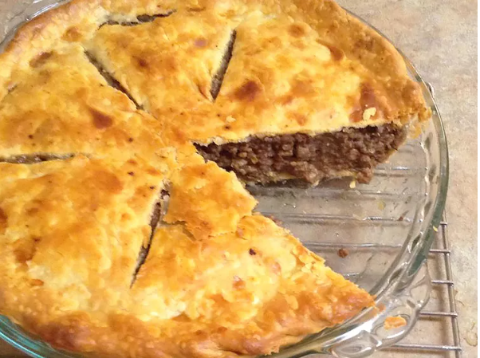

Homemade Meat Pie Recipe

Description
This hearty meat pie recipe is quick, easy, and full of satisfying and crowd-pleasing ingredients.
Ingredients
- 1 medium potato, peeled and cubed
- 1/2 pound ground beef
- 1/2 pound ground pork
- 1/2 cup chopped onion
- 1/3 clove garlic, chopped
- 1/2 teaspoon mustard powder
- 1/2 teaspoon dried thyme
- 1/4 teaspoon dried sage
- 1/4 teaspoon ground cloves
- 1 teaspoon salt
- 1/4 teaspoon ground black pepper
- 1/4 cup water
- 1 (15 ounce) package refrigerated pie crusts
Instructions
- Preheat the oven to 425 degrees F (220 degrees C).
- Place potato in a saucepan with enough water to cover.
Bring to a boil, and cook until tender, about 5 minutes.
Drain, mash, and set aside.
- Meanwhile, crumble ground beef and pork into a large saucepan.
Add onion, garlic, mustard powder, thyme, sage, cloves, salt, and black pepper.
Stir in water.
Cook over medium heat, stirring, until meat is evenly browned.
- Remove from the heat and mix in mashed potato.
- Ease one pie crust into a 9-inch pie plate.
Fill with meat mixture, then top with the remaining pie crust.
Trim any excess dough, then crimp the edges with the tines of a fork to seal.
Prick top crust a few times with a knife to vent steam.
Cover the edges of the crust with aluminum foil.
- Bake in the preheated oven until crust is browned, about 25 minutes.